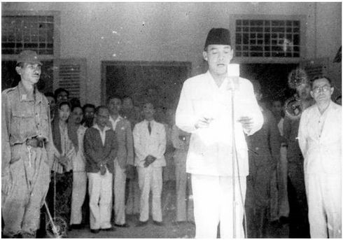

Sejarah Indonesia
Indonesia memiliki sejarah panjang yang melibatkan peradaban kuno, kolonialisme, dan perjuangan untuk kemerdekaan. Berikut adalah beberapa peristiwa penting dalam sejarah Indonesia:
Peristiwa Penting

Proklamasi Kemerdekaan
Pada tanggal 17 Agustus 1945, Indonesia memproklamasikan kemerdekaannya dari penjajahan Belanda dan Jepang. Momen ini menjadi tonggak sejarah bagi bangsa Indonesia.

Peradaban Kuno
Candi Borobudur adalah peninggalan peradaban Buddha di Indonesia yang dibangun pada abad ke-9. Struktur ini adalah bukti kemajuan teknologi dan spiritual masa lalu.
Sumpah Pemuda
Pada tanggal 28 Oktober 1928, para pemuda Indonesia bersumpah untuk bersatu sebagai bangsa, bahasa, dan tanah air yang satu, yaitu Indonesia.